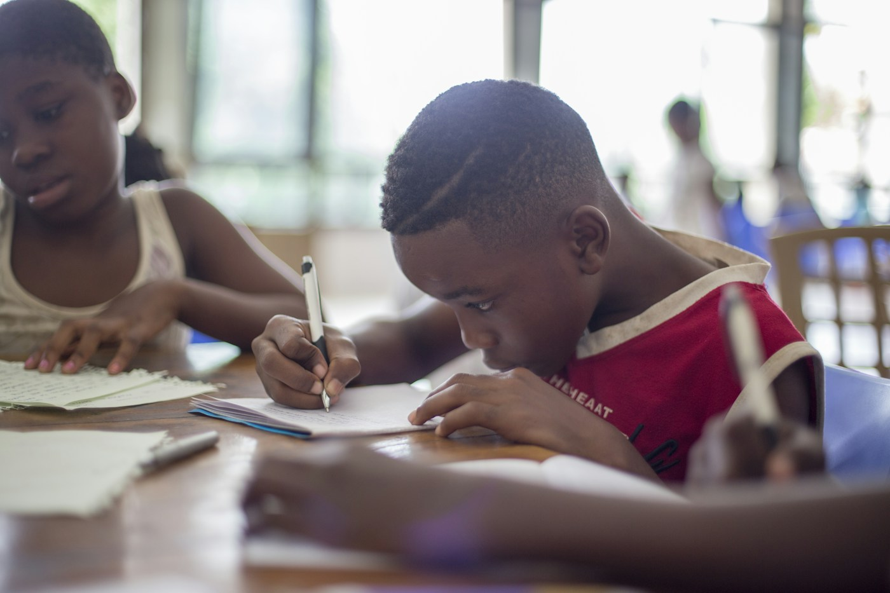

Educational Consultancy
Guidance for families, schools and organisations working through educational questions and opportunities.
- Explore context, needs and goals
- Review programme options
- Identify practical next steps
Educational insight and learner-focused support for families, educators, schools, organisations and communities.
Discuss a Learning Goal
AJIS brings educational consultancy, learning design and learner support together to respond to goals and needs. The starting point is a conversation about the people, setting and outcomes involved.
Support may be relevant to an individual learner, a family, an educational team or a wider learning programme.
Talk through your needs
Explore the focus areas below. Service scope and delivery are discussed and agreed to fit the learner or organisation.
Guidance for families, schools and organisations working through educational questions and opportunities.
Planning and development that connects curriculum aims to relevant content and learning experiences.
Structured learning experiences with clear aims, purposeful activities and consideration of learner needs.
Early learning support designed to nurture curiosity, confidence and strong foundations.
Learning support and design that encourage literacy, communication and engagement with reading.
Approaches that recognise diverse needs, individual strengths and different ways of learning.
Individual or group learning support informed by goals, interests and educational context.
Programme planning that brings aims, content, activities and learner support into a coherent structure.

Families can share a learner’s level, learning area and support needs through the registration enquiry. The form is not connected to a submission service yet, so details entered will not be sent or stored.
View Tuition RegistrationDiscuss learning goals and possible support with AJIS.